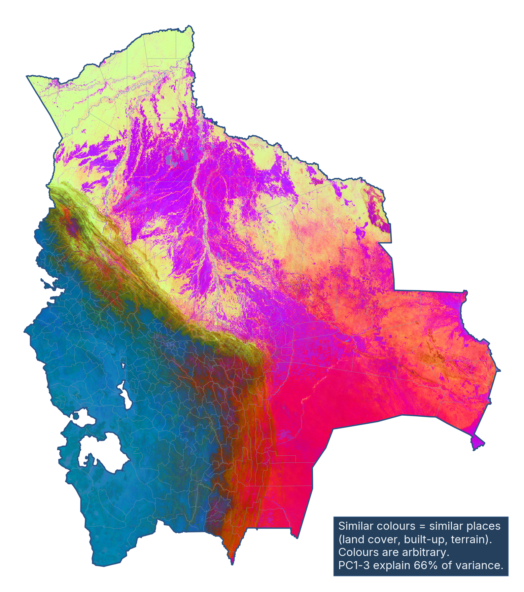

First · look
A satellite photographs the same patch of land all year.
Then · squeeze
A computer squeezes that whole year into one short list.
Nobody tells it what a field is. It learned from pictures of the whole planet.
Try it · every place gets a pattern
Different places make different patterns.
The trick · alike looks alike
Places that look alike get lists that look alike.
Zoom out · Bolivia, 2017
Give every patch of a country its list, paint it, and the map draws itself.

- BlueHigh, dry Andes and the Altiplano
- YellowThick Amazon forest in the north
- VioletWet grasslands and river plains
- Pink and redDry eastern plains toward the Chaco